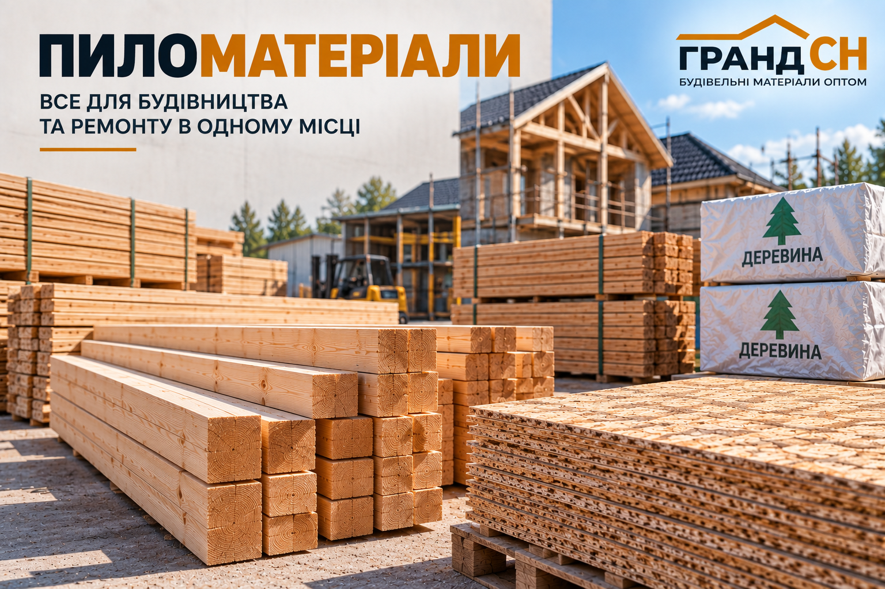

Пиломатеріали
Брус та дошка для будівельних, монтажних і господарських робіт.

Пиломатеріали використовуються для облаштування конструкцій, каркасів, основ та інших будівельних задач.
Брус
Брус різних перерізів і довжини для конструкційних та монтажних робіт.
Приклади: Брус 50х50, 50х70х3000, 50х100х4000, 50х150, 100х100х4000, 150х150х4500.
Дошка
Дошка різних розмірів для будівництва та облаштування об’єктів.
Приклади: Дошка 25х100х4000, 25х120, 25х150х4000.
Кріплення для деревини
Для монтажу дерев’яних конструкцій в асортименті є відповідне кріплення.
Приклади: Гвинти для дерева 7,0х85, 7,0х105 та шурупи по дереву FD.
Основні виробники та торгові марки
Позиції пиломатеріалів та супутнього кріплення за актуальним асортиментом ГРАНД СН.
Актуальний асортимент, наявність та характеристики уточнюйте у менеджера ГРАНД СН.